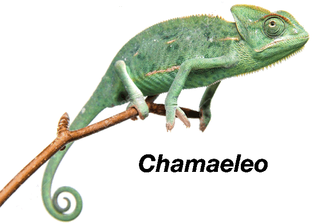
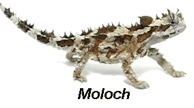
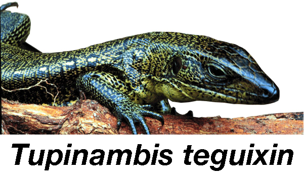
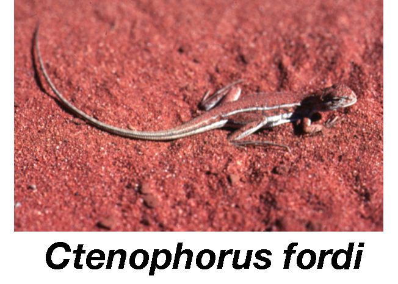
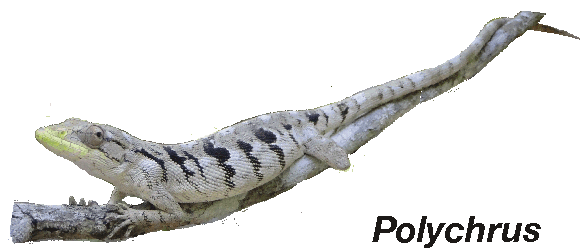
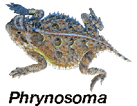
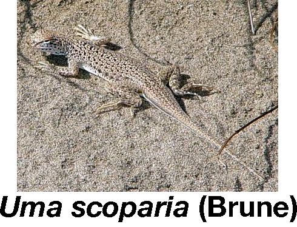

Exploring the Lizard Niche Hypervolume
|  |
|  |
|  |
|  |
| model | description |
|---|---|
| Model 1 | 51 niche dimensions |
| Model 2 | 10 Convergent Pairs |
| Model 3 | Habitat Types |
| Model 4 | Foraging Mode plus Trophic Dimension |
| Model 5 | Life History Dimension |
| Model 6 | Metabolic Dimension |
| Model 7 | Arboreal vs. Terrestrial |
| Model 8 | Body Temp x Ambient Temp Slope |
| Model 9 | Clutch Frequency |
| Model 10 | Foraging Mode |
| Model 11 | 4 Geographic Regions |
|  |
|  |
 |
|  |